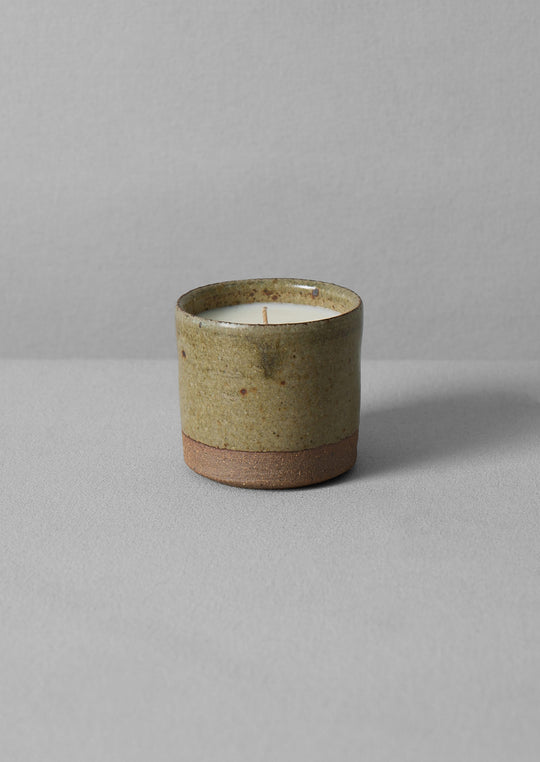

<-

->
Sheepskin Hot Water Bottle Cover
£59.00
Free UK Returns on all orders
Product Information
Incredibly soft sheepskin hot water bottle cover. The sheepskins are specially sorted and selected, then cut by hand in Somerset. Each piece is unique, with variation in texture and colour.
The open top design allows for easy filling. To fit a standard sized hot water bottle, which is approximately 33cm x 20cm and often 1.7L capacity.
>
Delivery & Returns
Free standard delivery on full price orders over £150.
Standard Delivery (3-4 working days): £3
Express Delivery (1-2 working days): £6
Next Working Day Delivery: £8
Before 12pm Next Working Day Delivery: £14
Free returns (subject to our returns policy).
Please refer to our delivery & returns policies for more information.
>